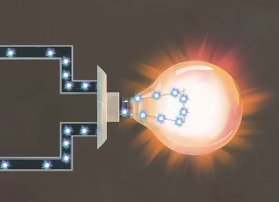

What’s up?
Overview & outline stage:
(may take some minutes, -- involves brainstorming, mental preparation and brief listing (better with pen and paper but can also just be a mental outline!)
The first challenge we all face sometimes or, often, depending on our schedules and personalities, is the challenge of not knowing what to do.
Lack of direction is the mother of inaction. What I mean is that seeming laziness sometimes is not primarily an issue of discipline but an issue of direction – i.e. not knowing what to do.
In this state, we are either:
blank (having no idea at all what to do)
OR
bombarded (having so many things to do or having so many ideas but not knowing which to work towards)
These two dissimilar situations can lead to a similar reaction of inactivity, procrastination, unproductivity or under productivity.
That’s why this initialising stage of brainstorming is very important.
Like I mentioned earlier, you are either bombarded or blank,
Bombarded?
All you need to do is to clear your mind, but how do you do this?
Imagine a friend asking you ‘what’s up with you?’ and you are trying to list all the things in your head/mind.
Answer that virtual question as rough, lengthy, short, numerous as it is on a paper. Just write everything in an unrefined way, don’t shorten or elongate the list and don’t write like you’re answering an essay question, just flow!
Blank?
You perhaps don’t even have a single idea what to do?
Simply ask yourself (with a normal and neutral mindset) – what’s up in my life right now? (where am I at presently?, why am I here?, am I supposed to be somewhere else?, is there some duty or routine I have not attended to?, what’s my top wish right now?)
What works?
Research stage
I would have loved that this comes next, but obviously you can’t go straight to this especially if you have not concluded on which specific singular thing to start with and what order you wish to take with other activities. So,
The second question is…
|
What first?
Organisation stage
Now, all these questions won’t make much sense or difference to you if you are not determined to get out of inactivity and unproductivity.
What happens at the organisation stage?
If you have just one thing to do, you have no need prioritising, but when you have so many things on your bombarded list, you have to:
ARRANGE
You can decide to arrange your activities using any of the following preference factors:
‘Which is the easiest for me to start with?’
‘Which one catches my flair most?’
‘Which is most important?’
‘Which is most urgent?’
‘Which is most rewarding?’ etc.
Choose a suitable preference factor just to attract yourself into getting interested, having it somewhere at the back of your mind that you are going to move on from that task to other tasks.
Make your listing on paper or mentally with respect to how all those activities cope with your preference factor.
What works?
Research stage
(this stage can be either long or very short, depending on what’s at hand, is it a fast one or something that you need to calmly sit down to find out about)
Know-how is key to anything, while upgraded, updated knowledge can be an advantage, ignorance or stale knowledge can be stagnating, boring or disadvantageous.
Only what works will work, so before setting to work, no matter how much in a hurry, quickly ascertain what works.
Just to say the obvious, you can research via: google, specialised sites, friends, colleagues, consultants, professionals etc. But it’s not just about asking questions, it’s about:
Asking the right questions
Asking the right questions in the right way
Being able to decode, discern, analyse, understand, interpret and customise the responses that you get to favour your specific context. Ask how to ask, then ask!
|

What’s wrong?
Troubleshooting stage
There’s every possibility that everything goes right, but then there are also chances that certain things may go wrong. How do you troubleshoot?
Diagnosis
Is the challenge with:
You? (fatigue/tiredness, motivation level, disturbed emotion, laziness, dizziness, etc.)
Your style/method? (too hard, complicated, requiring more man power or resources than you can afford, boring/uninteresting etc.)
Your time / time frame (too small, too early, not the right time etc.)
Your environment/partners if there are (not helpful, too hot, too cold, too comfortable, inconvenient, distracting etc.)
Treatment
Just try to fish out the actual source of the knot in your activity, from there you can design, research or ask for a troubleshooting solution for that.
Apply discretion, brainstorm or ask the right persons.
Deal with the problem before you try to continue. For example, if the problem is dizziness because you’ve not had a good sleep, you might just need to quickly take a nap and wake up to get to work. If it’s an unnecessary one, you can decide to do or take something that will boost your alertness.
What if the trouble is laziness? There’s not one absolute solution but you can decide to set yourself up with an accountability partner or find a fun-way, fun place to do the work. Use music, company or reward, just anything that works for you!
What next?
Proactivity stage
This is a very bombarded generation, so many distractions and side attractions, such that if you don’t get very deliberate about your time, you may just find yourself going to bed every night with nothing tangible to show for the day.
That’s why you must have the strategy of proactivity; while you are on a current activity, don’t allow yourself to finish that activity before thinking or brainstorming what next you are going to do.
Apart from what’s on your organised list, have a mental list that keeps you reminded of what next. Let your mind be your Personal Assistant, and you be the boss!
If you wait to finish one task before you figure out what next, then you may be more liable to sink back into the mud of inactivity or disorganisation.
|